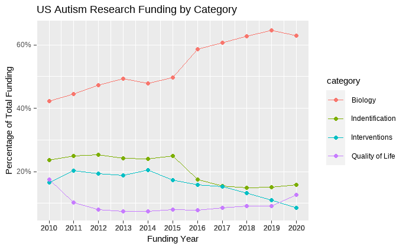

4 The Lost Generation
4.1 Unique Challenges
Autistic adults perceived as having lower support needs face a conundrum. While they rarely qualify for existing systems of support, most face significant challenges that are often overlooked, dismissed, or disbelieved. Most autistic people will tell you that the hardest part about being autistic isn’t being autistic but navigating a neurotypical world that includes unconscious bias and ableism (provide link). As Ludmila N. Praslova writes, Autism Doesn’t Hold People Back at Work. Discrimination Does, and research is backing this up. These things exacerbate the problems individuals may already face due to sensory differences, ADHD, anxiety, and other common issues autistic people deal with. Autistic adults experience substantially elevated suicide risk and reduced life expectancy, and even those with college educations routinely lack full employment. Not only are huge numbers of invisible autistic adults suffering, but society is also missing out on the benefits of their talents and skills.
4.2 Lack of Awareness
For decades, autism was seen as a developmental challenge that primarily affected children. Outdated notions of what constitutes genuine autism are overlooked by many people. Because so little research has even acknowledged the lives of adults with autism, we know close to nothing about what successful adult development looks like. Some have described those who were never identified as a lost generation. Late-identified and never-identified autistic adults face unique challenges with respect to aging. Existing research suggests that we face reduced life expectancy, increased risk for physical disability, and an earlier onset of age-related cognitive concerns, including Alzheimer’s and related dementias. There is an immense amount of work to do to help prepare the aging autistic adult community and a poorly informed medical system to successfully face these challenges right now and in the coming decades. Fortunately, there are also many skilled, intelligent, creative, compassionate, and hard-working people in the autistic community who are ready and capable of doing this work. And they are the right people to do it.
4.3 Lack of Research
Research on the unique experiences of autistic adults has only recently begun in earnest, and we are especially behind regarding those referred to in the scientific literature as ‘autistic without intellectual disabilities’ (formerly known as having Asperger’s Syndrome or being “high-functioning”). (find reference for the change in nomenclature) While we know they are out there, no formal surveys have been done to get to know (let alone quantify) the adult autistic population. Consequently, we know very little about who they are, what they want, and what they need. This dearth of knowledge has created huge gaps in available services for these individuals, which adversely impacts them, their families, and their communities in terms of physical health, mental health, and economic well-being. But, ironically, because autism is so misunderstood when they do go looking for help, the majority of autistic adults are perceived as too capable to be needing assistance and simply fall through the cracks.
Despite the fact that advocates and researchers have been pushing for decades to have autism research funding focus more on quality of life and less on “prevention and cure”, the trend has only gotten worse.

Figure 2. Data from Interagency Autism Coordination Committee
4.4 Transition to Adulthood
The problems we are discussing don’t only affect existing autistic adults. The sudden drop-off of support upon graduating high school has become known as the services cliff. One of the biggest worries faced by both parents of autistic people and young autistic people themselves is what will happen after they graduate from high school. Will they be offered meaningful work in tolerant and respectful environments? Will they be able to earn enough to live independently? Will they find open doors in trade schools or colleges and be offered the support they might need?
Fortunately, the transition to adulthood has received some attention from the research community and policymakers. Most institutes of higher learning have programs to support neurodivergent students, and many workplaces have enabled employees to form Employee Resource Groups (ERGs) to provide peer support. However, accessing those supports requires first getting into college or being hired at an organization that has an autism ERG. In other words, there is some help in some circumstances, but one first has to get there.
4.5 Additional Issues
4.5.1 Employment
Autistic adults without intellectual disabilities face significant challenges in finding and maintaining employment. In a study of 254 autistic adults, 77% reported difficulties in applying for jobs, with challenges in communication, social interaction, and sensory sensitivities. Sensory processing differences are reported by 50-70% of autistic people. Executive functioning challenges, affecting skills like organization and time management, are experienced by an estimated 80% of autistic individuals. However, only 58% of autistic employees report receiving any workplace accommodation.
Underemployment is a major issue, with studies finding that 53% of autistic adults work in jobs below their skill level, 51% work part-time despite wanting full-time employment, and only 16% are in full-time paid work. In a survey of 1,201 autistic adults, 51% reported experiencing discrimination in hiring or promotion, and only 14% reported being in full-time employment. The unemployment rate for autistic adults is estimated to be 30-40%, significantly higher than the general population.
These challenges lead to financial instability, with 46% of autistic adults reporting incomes below the poverty level. Workplace accommodations, flexibility, and understanding are crucial to improve employment outcomes, but only 28% of autistic employees report having adequate supports at work. Systemic changes are needed to create more inclusive and accessible workplaces for the estimated 50-75% of autistic adults without intellectual disability.
4.5.2 Marginalized Populations
All of these problems compound for members of intersectional populations who may already be marginalized along other dimensions. Many researchers believe that autism is underdiagnosed in communities of color, particularly in Black communities, as well as for female-presenting people. Meanwhile, fluidity in gender identity and sexual orientation is more highly represented among autistic people. Little research has been done to assess how autism uniquely affects people in these different subgroups.
4.5.3 Suicide
Estimates of the life expectancy of autistic adults are typically about seven to fifteen years lower than expected (O’Nions et al., 2023), a disparity due in part to the higher than average risk for suicide (Hirvikoski et al.2016) and accidental deaths (Smith DaWalt et al., 2019). In contrast to allistic people, these are primary sources of mortality, competing with more typical causes of death in the larger population. An autistic person is nearly as likely to die from suicide as they are to die from cardiovascular disease. And yet, public health efforts and autistic support services largely ignore this reality.
Autistic people face high rates of suicidality and overrepresentation in deaths by suicide. Current estimates indicate that autistic individuals account for approximately 3-4% of children and 2-3% of adults. However, researchers conducting psychological autopsies indicate that 10% of deaths by suicide are undiagnosed autistic individuals. The same researchers indicate that up to 40% of people who die by suicide have autistic traits. Among diagnosed autistics, as many as 72% of autistic people experience suicidal ideation, and up to 47% of autistic people attempt to end their own lives. The importance of supporting autistic individuals struggling with suicidality is well-established. However, there is a lack of dedicated crisis support for autistic people. The existing resources are clearly not meeting the needs of autistic people, and we need not accept these deaths as inevitable.
Suicidality in autistic people is not inherent to being autistic. Existing research indicates that autistic suicidality is driven by thwarted belonging and camouflaging autistic traits. Importantly, autistic people communicate suicidality differently than non-autistic people, and the differences between autistic and non-autistic communication leads to misunderstandings. Compounding this, autistic warning signs of suicide differ from neurotypical warning signs. These factors, when combined with the double empathy problem (for example, autistic people express suicidality in a unique way) can lead to both traumatic miscommunications and missed opportunities with tragic outcomes.
4.5.4 Physical and Mental Health
Across a variety of health domains, autistic people fare worse (Lodi-Smith 2021). Additionally, we are exposed to risks that are not of primary concern for most people (Muskens et al., 2017) These include autoimmune dysregulation of many kinds, autonomic dysregulation, connective tissue disorders, gastrointestinal disorders, and many other areas of health concerns. A lack of understanding regarding these differences, coupled with communication barriers and false notions about autism all collude to create barriers to accessing health services and care.
4.5.5 Homelessness
Barriers to entry to the workplace as well as challenges and holding jobs due to ablest attitudes or inflexible policies put us at risk of severe financial strain (Ohl et al., 2017). This coupled with the possibility of reduced social support all increase our risk of exposure to homelessness. The few studies that attempted to investigate autism in homeless populations suggest that rates of autism in homeless populations is much higher than that observed in the general public, and may be ten times higher (Churchard et al., 2019). Autistic people additionally face extra barriers in accessing the few services for unhoused people. Environments created with the intention of providing support may be aversive or even harmful for autistic people (Kargas et al., 2019).